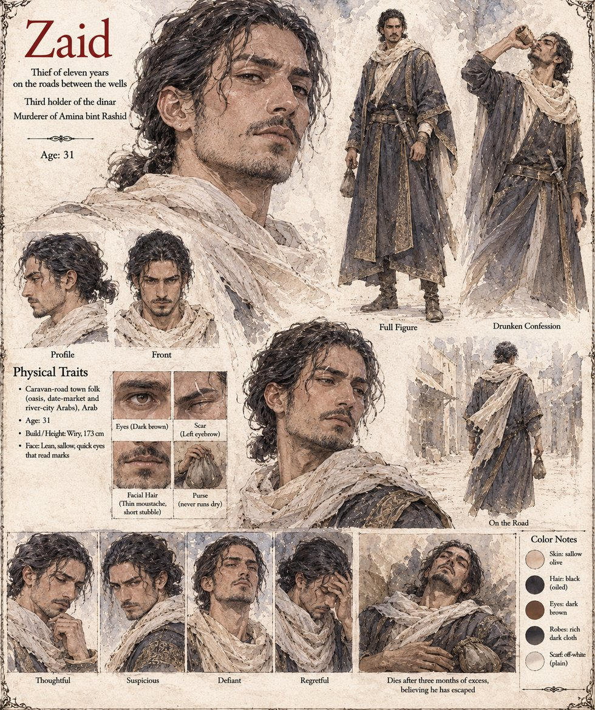

Zaid
Thief of eleven years on the roads between the wells · the dinar's third owner · murderer of Amina bint Rashid · thirty-one by the sheet
A thief of eleven years on the roads between the wells, who hears of the dinar from a trader in a wine-tent three days from anywhere, who had the story from a cousin, who had it from a woman who swore to it on her mother's grave: that she watched the divorced wife pay with the coin and get it back in change. No one checked it. He goes looking for the woman it was about, and finds Amina.
On the twenty-sixth of Deyren he cuts her throat in her tent and strips it of everything of value, a stranger to her, to her clan and to the quarrel that will be built on the assumption that he was not. The scrap of blue cloth and the written price he leaves behind are worthless to him. She dies before any akad can be struck, so the coin defaults to the hand that next closes around it, and the third holder of the dinar is its murderer. He is the proof that the folk story of the Coin With No Grave, which no murderer could keep, is wrong in a precise way: he kept it, because by its rule a man who killed its owner simply became its next legitimate one.
It comes back to his pocket after every spend, which is why his purse never runs dry, and he spends it recklessly, in a river-city wine-house where he tells Nur, over several weeks, everything: the coin, the woman in the desert and the shepherd everyone will blame instead of him. He also sends a steady modest sum to his mother, in a village he has not seen for eleven years, through three intermediaries, and she never learns its source. He dies after three months of excess, believing he has escaped. The wine-house's own boy finds him in his rented room, and within the hour Nur has searched the body and taken the coin.
His name is what Nur eventually gives Qasim, and what Qasim, years later, gives Malik with the four sentences of a confession that freed him.
The sheet draws him wiry and lean-faced, sallow-olive, with quick dark brown eyes, black oiled hair tied back in a short tail, a thin moustache over short stubble and a small white scar through the left eyebrow, in a dark robe with gold-patterned trim cut loose at the shoulders and an off-white scarf, with a thin knife at his belt and a small purse in his hand. Its expression panels run thoughtful, suspicious, defiant and regretful; its views are captioned Full Figure, Drunken Confession and On the Road, and the last scene, Dies after three months of excess, believing he has escaped, shows him lying back with the purse on his chest. Its heading lines, Thief of eleven years on the roads between the wells, Third holder of the dinar and Murderer of Amina bint Rashid, follow the manuscript. The manuscript's one detail of his appearance is a robe cut for a richer man; the age of thirty-one, the scar and everything else visual are the sheet's.